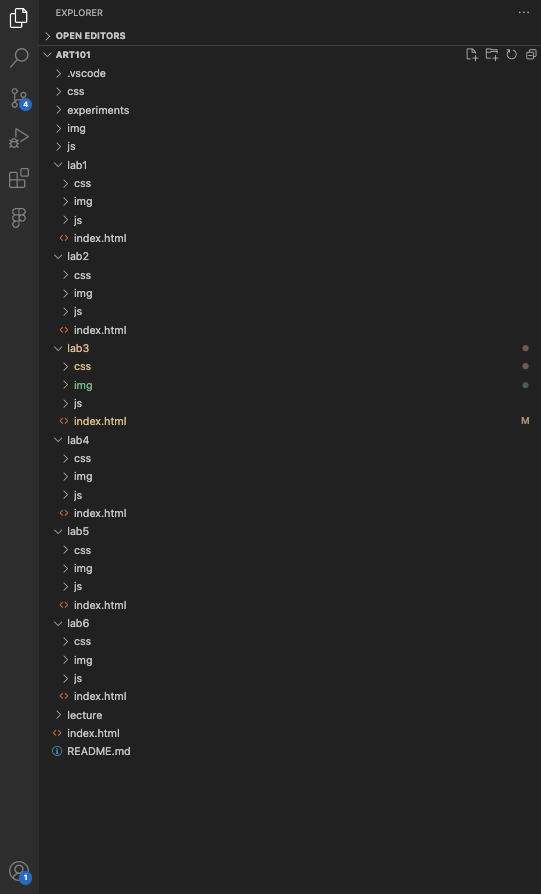

Lab 3 - File Structure and File Transfer
Problems & Challenges
I didn't have a problem with the file structures or transferring them. I am already very familiar on how file systems work on my pc and how they operate in vscode or other editors. I did have a problem with having a photo saved as ".JPG" instead of ".jpg". It was a bit of an ordeal fixing the the file type that was already pushed to git but managed to get it fixed.
I also had some issues styling with CSS. I added a character I drew to the corner of my homepage and had a bit of trouble figuring out how to set it to align on the same line as my name in the top right corner. I want to eventually make it standard across all pages so when you click it, it redirects you back to the homepage. However, when I tried using an anchor tag, it moved the image next to my name on the left. I did not find a way to fix it.
Results
Here is an image of my file structure in my editor.
